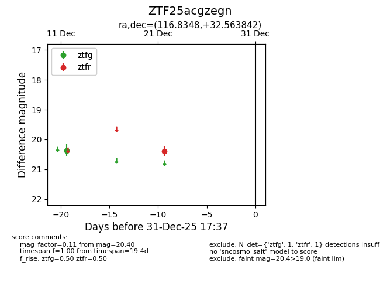
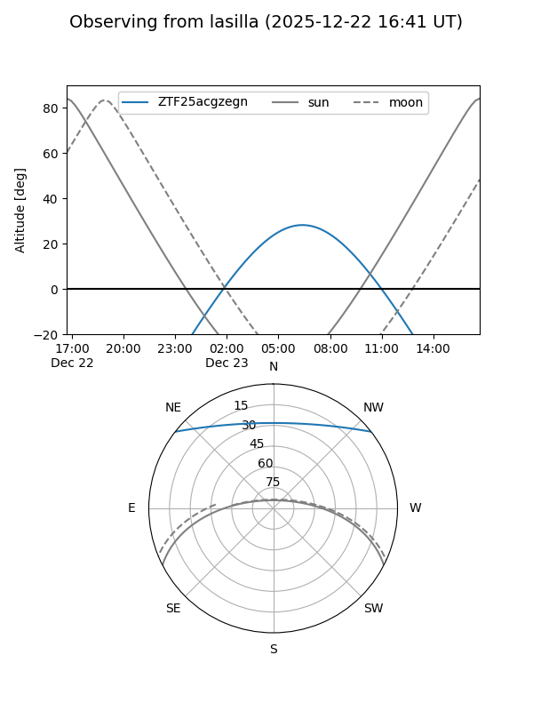
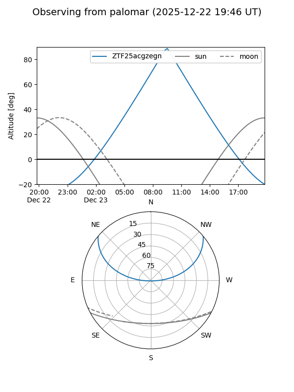

ZTF25acgzegn
Target ZTF25acgzegn at 2025-12-22 18:11
Aliases and brokers:
FINK: fink-portal.org/ZTF25acgzegn
Lasair: lasair-ztf.lsst.ac.uk/objects/ZTF25acgzegn
ALeRCE: alerce.online/object/ZTF25acgzegn
alt names
ZTF25acgzegn (ztf,fink_ztf)
Coordinates:
equatorial (ra, dec) = 116.8348,+32.56384
equatorial (HMS+DMS) = 07:47:20.35,+32:33:49.83
galactic (l, b) = (187.6535,+25.25035)
Flags:
Photometry:
last ztfg=20.37, ztfr=20.40
1 ztfg, 1 ztfr detections
Lightcurve

Visibility


Additional plots